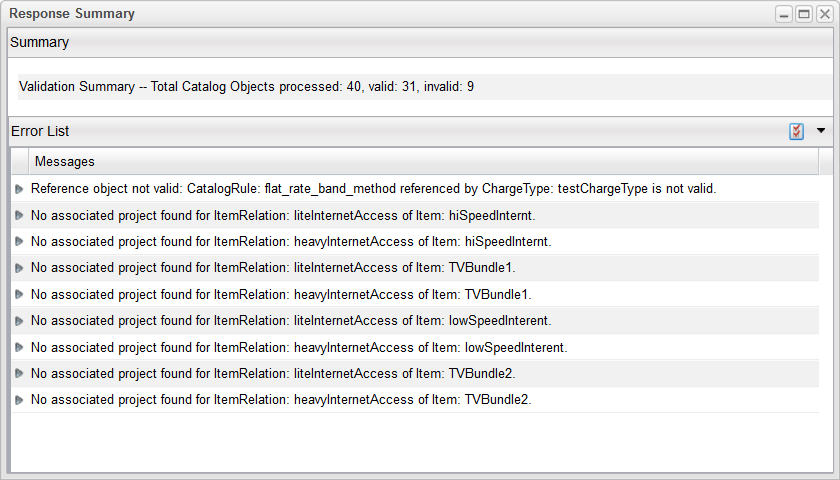

Validate Project
The Validate Project function allows you to validate a project. This functionality detects and reports the following catalog anomalies:
- All catalog objects that are active, but their referenced objects are not active.
- For a catalog object that has two intervals (one interval defines a valid version of the object, and the other defines a valid version for objects that reference this catalog object), the first interval takes precedence. Any catalog object that does not satisfy this condition appears in this report.
- All catalog objects that do not have a project.
- All project assignments referencing catalog objects that do not exist in the catalog.
- All catalog objects for which there are two or more versions with the same start date and end date. As an extension, consider CTLG_TIME_UNIT. If the difference between the start dates of two versions is less than the catalog time unit, these versions are reported.
To use the Validate Project function, complete the following steps:
- From the menu bar, click Designer > Projects to launch the Projects node in the left pane.
- Select the project that you want to validate, and then click Configuration > Validate Project from the menu bar.
- The Response Summary dialog appears with two sections:
- A Summary section, which describes the total number of objects that were validated, and a breakdown of how many objects were valid and invalid
- An Error List section, which describes the error and which object is affected

- You have the option of saving the information to a file by clicking the drop-down icon on the right side of the Error List heading. Otherwise, when you have finished reviewing the report, click the Close button to close the Response Summary dialog.
|